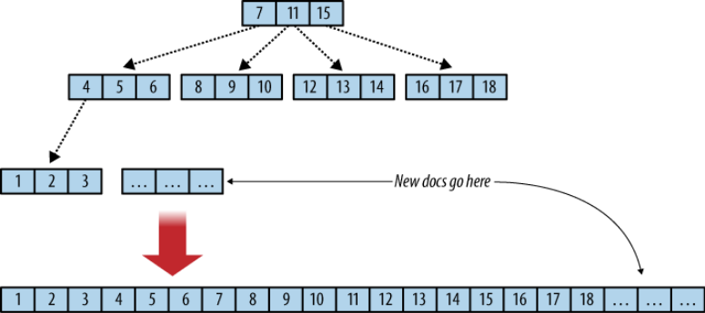
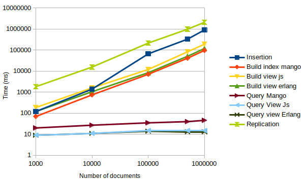

Advanced concepts¶
Indexes: concepts¶
But why, though?¶
In order to efficiently filter documents through selectors and sort them, it is important to correctly index data. An index is a way to organize documents in order to retrieve them faster.
To give a simple and non-database comparison, a recipe book might have an index listing all the recipes by their name with their page number. If the reader is looking for a particular recipe, this index avoids him to scan the full book to find it.
The principle is the same for databases index: we want to avoid scanning the whole database each time we are looking for specific data expressed by a selector: even though computers are way faster than humans to scan data, this task can be very time-consuming when dealing with thousands or millions of documents.
In more formal terms, time complexity of a query run on a database with n documents will be O(n) without index, as it requires to scan all documents. In CouchDB, the indexes are actually B+ Trees, a structure derived from the B-Trees, that perform in O(log(n)) in average, which guarantees a very fast access time even in large datasets.
From a practical point of view, B-trees, therefore, guarantee an access time of less than 10 ms even for extremely large datasets.
—Dr. Rudolf Bayer, inventor of the B-tree
B+ Tree¶
CouchDB indexes are B+ Trees. It means that indexed fields, here keys, are organized as a tree, with the documents stored in the leafs nodes. So, finding a particular document means browsing the tree, from the root to the leaf.
In each node, a key has two children: the left child has all its keys inferior to the parent, while the right child has all its keys superior to the parent.
In the Figure below, borrowed from the CouchDB guide, you see that each node has three keys. In CouchDB implementation, a B+ Tree node can actually store more than 1600 keys.

This design is very efficient for range queries: in the example above, a query looking for documents having an indexed field between 1 and 3 will browse the tree to find the first document position (with a key of 1) and then get the next two contiguous documents.
ℹ️ CouchDB has an append-only design: it means that there is no in-place update. Each time a document is updated, its new version is appended to the database file, and the B+ Tree is updated to reflect the change.
ℹ️ It is not necessary to master the B+ Tree logic to query data, but it is good to at least be aware of the main concepts to understand the indexing logic, especially when designing complex queries.
ℹ️ When indexing several document fields in the same index, the key is actually an array of those fields, e.g. an index on ["category", "created_at"] would give keys such as ["sport", "2019-01-01"].
ℹ️ A key does not have to be unique. Actually, it is often useful to group document per key, e.g. a category key can return many document with the same key value, like sport, work, etc.
Indexes: why is my document not being retrieved?¶
At indexing time, CouchDB evaluates if a new document should be indexed by checking if its fields match an existing index. It means that all the indexed fields must exist in the document to index it. It can be problematic for queries that need to check if a particular field exists or not.
For example, this query won’t work:
const queryDef = client
.find("io.cozy.todos")
.where({
category: {
$exists: false,
},
})
.indexFields(["category"]);
Here, we want to get all the todos without a category field. However, those documents will never be indexed, precisely because the field is missing.
Hence, think carefully about your data before hand and do not use queries with $exists: false whenever possible. If a field is missing, it might be better to add a null value so that your documents do not have any missing fields. If this is not possible for some reasons, here is another possible solution - yet not very efficient:
⚠️ Not efficient workaround
const queryDef = client
.find("io.cozy.todos")
.where({
_id: {
$gt: null,
},
category: {
$exists: false,
},
})
.indexFields(["_id"]);
Here, we force an index on the _id, which always exists in any CouchDB document, and ask all the documents with "_id": { "$gt": null }. The category is not indexed so the documents without this field will enter the index.
This is not efficient as it implies that the "category": { "$exists": false } condition will be evaluated in memory by CouchDB for all the documents of the database, thus making a full index scan.
Indexes: performances and design¶
When designing indexes on several fields, one should keep in mind that they are actually B+ Tree, as explained in this section. This can be helpful to design efficient queries and avoid performance traps.
To illustrate this, let’s assume you have declared this query, to get all the “work” todos created in 2019:
const queryDef = client
.find("io.cozy.todos")
.where({
created_at: {
$ge: "2019-01-01",
$lt: "2020-01-01",
},
category: "work",
})
.indexFields(["created_at", "category"]);
⚠️ This query is actually sub-optimal. To understand this, let’s represent some sample data:
| created_at | category |
|---|---|
| 2019-01-01 | family |
| 2019-01-01 | sport |
| 2019-01-01 | work |
| 2019-01-01 | work |
| 2019-01-02 | work |
| 2019-01-03 | sport |
| 2019-01-04 | work |
| … | … |
| 2020-01-01 | family |
This shows how the data is organized in the index: it is primarily sorted by created_at and then by category. First, the query is looking for all the todos starting from "2019-01-01" and before "2020-01-01". It easily finds this range in the B+ Tree; but now it must also filter all the results to only keep the rows with category: work.
And this cannot be done through the B+ Tree, because matching rows are not contiguous, as shown in green in the table: this means that CouchDB is forced to perform the category condition in memory, leading to bad performances.
💡 Hopefully, this example can be easily be solved by switching the index fields order:
.indexFields(["category", "created_at"])
The data is now organized as follow:
| category | created_at |
|---|---|
| family | 2019-01-01 |
| ... | ... |
| sport | 2019-01-01 |
| ... | ... |
| work | 2019-01-01 |
| work | 2019-01-01 |
| work | 2019-01-02 |
| work | 2019-01-03 |
| work | 2019-01-04 |
| … | … |
| work | 2020-01-01 |
Now, the very same query can be efficiently processed: the category: work is first evaluated in the B+ Tree, which return all the relevant rows, sorted by created_at. Then, the range is easily found now that all the rows are contiguous.
💡 The main takeaway here is: when dealing with a query with both equality and range, you must first index the equality field. If you are interested about this, you can learn more here. Even though it is SQL-oriented, it also applies for CouchDB as the B-Tree indexing logic is the same.
💡 When creating an index, carefully think about how your data will be organized and which query will need to perfom. The performances can dramatically vary depending on your design, with several orders of magnitude.
💡 The problematic and consequences of the not contiguous rows is further explain in the partial indexes section.
Partial indexes¶
In CouchDB, a document is indexed only if its fields matches an existing index. As a consequence, it is not possible to perform efficient queries on non-existing fields.
For instance, the query below does not work, because it searches for document without the category field, but the absence of this field will cause such documents to never be indexed, as previously explained here:
const queryDef = client
.find("io.cozy.todos")
.where({
category: {
$exists: false,
},
})
.indexFields(["category"]);
In the same manner, queries implying non-contiguous rows in the B+ Tree are sub-optimal. Typically, queries with a non-egal operator, $ne:
const queryDef = client
.find("io.cozy.todos")
.where({
title: "Exercices",
category: {
$ne: "sport",
},
})
.indexFields(["title", "category"]);
As the $ne operator cannot guarantee contiguous rows, it needs to scan all the index on documents with the "title": "Exercices" to find those that are not in the sport category.
Partial indexes are a way to circumvent this issue. They allow to define a partial selector condition that will be evaluated at the indexing time, and will add the document in the index if it matches the condition.
Thanks to this, it becomes possible to tell CouchDB at indexing time to exlude documents that do not match the condition, e.g. "category": { "$exists": false} or "category": { "$ne": "sport"}.
Hence, the produced index will only include documents that already matched the partial filter selector, making it possible to query them, as this selector enforces contiguous rows or documents with missing fields.
You can declare a partial index in cozy-client like this:
const queryDef = client
.find("io.cozy.todos")
.where({
title: "Exercices",
})
.partialIndex({
category: {
$ne: "sport",
},
})
.indexFields(["title"]);
partialIndex supports the same syntax than the where, so you can easily move inefficient selectors into partial indexes.
Note in this example, it is no longer necessary to index the category field, as the field is now evaluated at indexing time, rather than during the query. Hence, a partial index is also useful to design less heavy indexes.
Mango pagination: performances¶
With mango queries, the recommanded method to paginate is through the bookmark parameter. However, one could also notice the skip parameter in the CouchDB API and be tempted to paginate with it.
We detail here why you should never use skip to paginate and use bookmark instead. We explain it for exhaustiveness and to prevent developers to fall into this trap.
This method consists of specifying a limit to the query, which is the maximum number of documents to return, and a skip parameter that is the number of documents returned so far. With cozy-client, its is expressed through limitBy and offset.
⚠️ Do not use this:
const docs = [];
let resp = { next: true, data: [] };
while (resp && resp.next) {
resp = await client.query(
Q("io.cozy.todos").limitBy(200).offset(resp.data.length)
);
docs.push(...resp.data);
}
This method is very bad for performances because it actually breaks the B+ Tree indexing logic: there is no way to efficiently skip a fixed number of data in such a tree, so skipping documents consists of normally running the query and then splitting the results starting from the skip number of documents. Thus, the performances quickly degrade when there are many documents to skip.
On the contrary, the bookmark method is very efficient as it preserves the B+ Tree logic. One can see a bookmark as a pointer to start the query in the tree.
💡 Use this:
const docs = [];
let resp = { next: true };
while (resp && resp.next) {
resp = await client.query(
Q("io.cozy.todos").limitBy(200).offsetBookmark(resp.bookmark)
);
docs.push(...resp.data);
}
Views: performances¶
In Cozy, we disabled by default the possibility to create views from applications. This is because we experienced severe performances issues as soon as several views were used: building the views is very slow.
This is mainly because CouchDB itself is written in Erlang, while views are JavaScript UDF and are executed in isolated JavaScript query processes to serialize the map-reduce functions. The communication between thoses processes and CouchDB is done through stdio , which is synchronous and thus require to process one doc at a time.
For more details, see this great blog post from a CouchDB contributor.
See also the CouchDB benchmark we performed.
As quoted from the CouchDB documentation:
Views with the JavaScript query server are extremely slow to generate when there are a non-trivial number of documents to process.
A 10 million document database took about 4 hours to do view generation
Let alone the very slow indexing time, this also requires a lot of server CPU to build views. Hence, applications cannot create views to ensure the scalability of Cozy.
ℹ️ Mango queries are directly interpreted in Erlang and therefore do not suffer from the same limitations.
❌ It is possible to express views in Erlang and thus circumvent this performance issues. However, this is completely forbidden in Cozy, because of the security: doing so requires to enable the Erlang query server that needs root access to the CouchDB server, as explained in the CouchDB documentation. This would break the isolation system and let open the possibilty to define adversary UDF functions.
Views: pagination¶
The CouchDB views does not implement the Mango queries bookmark system. However, it is still possible to paginate results efficiently by using a cursor.
This method, described in the CouchDB documentation, combines the startkey and startkey_docid parameters.
For each query, get the last returned document and extract the searched key as well as the _id to respectively set the next startkey and startkey_docid query parameters.
See this cursor pagination example in cozy-client.
Revisions¶
CouchDB keeps for each document a list of its revision (or more exactly a tree with replication and conflicts).
It’s possible to ask to the cozy-stack the list of the old revisions of a document with [GET /db/{docid}?revs_info=true](http://docs.couchdb.org/en/stable/api/document/common.html#get--db-docid). It works only if the document has not been deleted. For a deleted document, a trick is to query the changes feed to know the last revision of the document, and to recreate the document from this revision.
With an old revision, it’s possible to get the content of the document at this revision with GET /db/{docid}?rev={rev} if the database was not compacted. On CouchDB 3.x, compaction happen automatically on all databases from times to times.
A purge operation consists to remove the tombstone for the deleted documents. It is a manual operation, triggered by a [POST /db/_purge](http://docs.couchdb.org/en/stable/api/database/misc.html).
Conflicts¶
It is possible to create a conflict on CouchDB like it does for the replication by using new_edits: false, but it is not well documented to say the least. The more accurate description was in the old wiki, that no longer exists. Here is a copy of what it said:
The replicator uses a special mode of _bulk_docs. The documents it writes to the destination database already have revision IDs that need to be preserved for the two databases to be in sync (otherwise it would not be possible to tell that the two represent the same revision.) To prevent the database from assigning them new revision IDs, a “new_edits”:false property is added to the JSON request body. Note that this changes the interpretation of the _rev parameter in each document: rather than being the parent revision ID to be matched against, it’s the existing revision ID that will be saved as-is into the database. And since it’s important to retain revision history when adding to the database, each document body in this mode should have a _revisions property that lists its revision history; the format of this property is described on the HTTP document API. For example:
curl -X POST -d '{"new_edits":false,"docs":[{"_id":"person","_rev":"2-3595405","_revisions":{"start":2,"ids":["3595405","877727288"]},"name":"jim"}]}' "$OTHER_DB/_bulk_docs"This command will replicate one of the revisions created above, into a separate databaseOTHER_DB. It will have the same revision ID as inDB,2-3595405, and it will be known to have a parent revision with ID1-877727288. (Even thoughOTHER_DBwill not have the body of that revision, the history will help it detect conflicts in future replications.) As with _all_or_nothing, this mode can create conflicts; in fact, this is where the conflicts created by replication come from. In short, it’s aPUT /doc/{id}?new_edits=falsewith_revthe new revision of the document, and_revisionsthe parents of this revision in the revisions tree of this document.
Conflict example
Here is an example of a CouchDB conflict.
Let’s assume the following document with the revision history [1-abc, 2-def] saved in database:
{
"_id": "foo",
"_rev": "2-def",
"bar": "tender",
"_revisions": {
"ids": ["def", "abc"]
}
}
The _revisions block is returned when passing revs=true to the query and gives all the revision ids, which the revision part after the dash. For instance, in 2-def, 2 is called the “generation” and def the “id”.
We update the document with a POST /bulk_docs query, with the following content:
{
"docs": [
{
"_id": "foo",
"_rev": "3-ghi",
"_revisions": { "start": 3, "ids": ["ghi", "xyz", "abc"] },
"bar": "racuda"
}
],
"new_edits": false
}
This produces a conflict bewteen 2-def and 2-xyz: the former was first saved in database, but we forced the latter to be a new child of 1-abc. Hence, this document will have two revisions branches: 1-abc, 2-def and 1-abc, 2-xyz, 3-ghi.
Sharing In the sharing protocol, we implement this behaviour as we follow the CouchDB replication model. However, we prevent CouchDB conflicts for files and directories: see this explanation
CouchDB performances¶
Here is a benchmark performed on a CouchDB 2.3, running on a Thinkpad T480, i7-8550U , 16 Go RAM with 256Go SSD.
The document insertion is performed in bulk, by batch of 100K documents maximum.
Each doc has the following structure:
{
"_id": "xxx",
"_rev": "yyy",
"count1": x,
"count2": x
}
count1 is indexed by a Mango index and a JavaScript view, while count2 is indexed by an Erlang view. Both of those fields are incremented at each document insertion.
Each query is paginated to retrieve 100 documents at a time. We measured the time taken for each query, to see variations depending on the database volumetry.
To measure the mango and views build time, we performed a single query just after their creation.
ℹ️ The X and Y axis are logarithmic.

ℹ️ The code used to perfom this benchmark is available on Github.